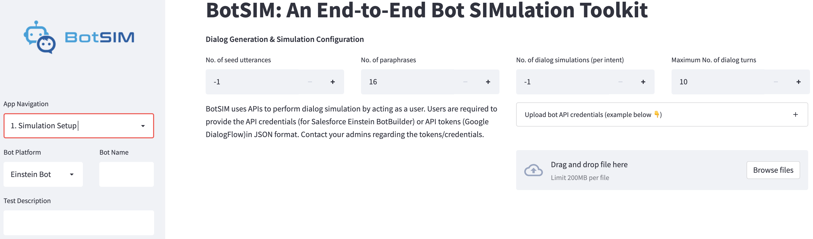
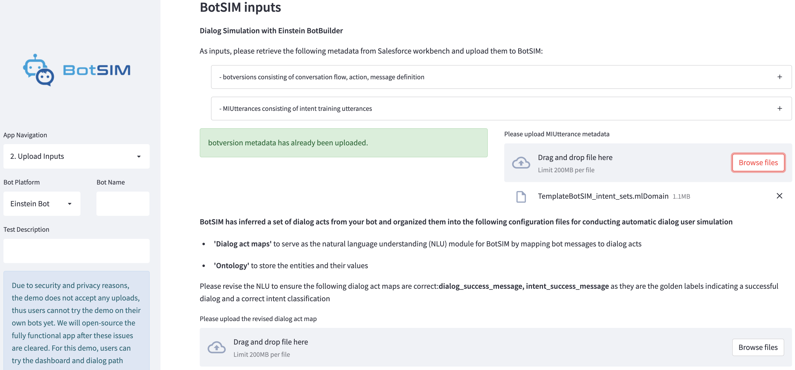
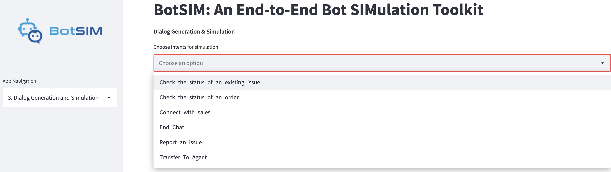
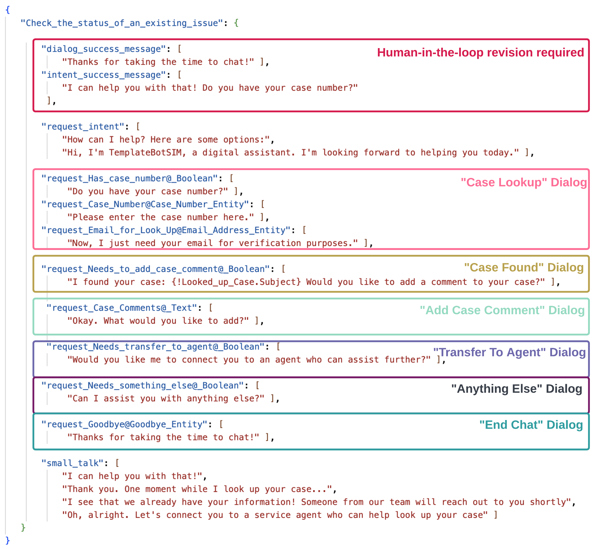
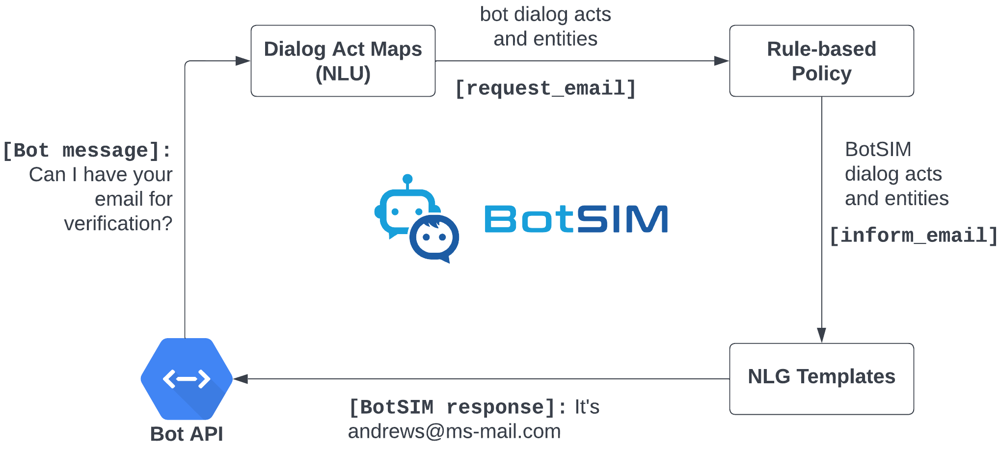

Retrieve Einstein BotBuilder bot metadata
There are two inputs required by BotSIM for dialog simulation with the Einstein BotBuilder platform:
botVersionsmetadata contains dialog flows, bot messages, entities, etc. It also includes intents and their training utterances (if intent sets not used). If intent sets are used, it defines the references to the respective intent sets for all intents. The utterances in the intent sets are to be extracted from MlDomains metadata)<?xml version="1.0" encoding="UTF-8"?> <Package xmlns="http://soap.sforce.com/2006/04/metadata"> <types> <members>Your-Bot-API-Name</members> <name>Bot</name> </types> <version>51.0</version> </Package>
An example package.xml for extracting the botversions metadata of a bot named “Your-Bot-API-Name” is given above.
The bot API name can be found under the bot “Overview” page. Replace “Your-Bot-API-Name” with the test bot API name and login to Salesforce Workbench
to retrieve the “botVersions” metadata.
By default, the “botversion” metadata is extracted as unpackaged/bot/<bot-name>.bot, where <bot-name> is the API name of the bot (the <members> field in package.xml).
The raw metadata is a XML file to be parsed later so that we can extract the dialog designs/flows, intents, entities for BotSIM to use.
2. MlDomain metadata contains all intent sets. Each intent set contains a set of training utterances that can be used to train (if NLP bot is enabled) certain intents.
Like the previous metadata, a “package.xml” can be used to retrieve the intent set metadata.
<?xml version="1.0" encoding="UTF-8"?> <Package xmlns="http://soap.sforce.com/2006/04/metadata"> <types> <members>Your-Intent-Set_Name</members> <name>MlDomain</name> </types> <version>51.0</version> </Package>
By default, after unzipping, the MLDomain metadata is also extracted under unpackaged/mlDomains. The mlDomains xml files are laster parsed to get the training utterances for all intents.
3. [Optional] Preparing evaluation intent utterances. To test and monitor the intent model performance, it is advised to hold-out a set of intent queries as the evaluation set, although the set can be created automatically by taking a subset of the paraphrases from the intent training utterances in mlDomain. Alternatively, an evaluation set can also be created from production chat logs. The purpose of the evaluation set is to evaluate and monitor the intent model performance after each model update. For example, if customers want to update the intent model with new user utterances, they might want to see how this affect the intent model performance compared to previous versions by running the dialog simulation on the same evaluation set. If the evaluation utterances are not explicitly provided, the paraphrases of the training utterances will be randomly divided into two sets for development and evaluation purposes.
Streamlit Web App
BotSIM Streamlit App is a multi-page app developed to lower the entry barrier of applying BotSIM to bot evaluation and remediation. The App is supported by the Python Flask API server running the following services:
botsim_generationis the generation service to parse input, apply paraphrasing models, generate dialog goalsbotsim_simulationis the simulation service to perform agenda-based user simulationbotsim_remediationis the remediation service to perform analysis and aggregate dashboard reports.
1. Simulation Setup
{kind=link}
This page is to guide users to provide the simulation configuration parameters.
The input options from the left panel include:
Bot Platformallows users to choose their own bot platform type, currently supportingEinstein_BotandDialogFlow_CXBot Nameis the name of the botText Descriptionallows users to write “commit messages” of the simulation to be performed. This is to keep track of the bot testing sessions to better compare the historical performance. For example, “adding more intent training utterances for Report_an_Issue”.
The Dialog Generation & Simulation Configuration inputs on the page include:
No. of seed utterancesis the number of intent utterances for each intent to be used for generating paraphrase intent queries. The default value “-1” means to use all intent utterances.No. of paraphrasesis the number of paraphrases to be generated for each intent utterance.No. of dialog simulationsis the number of dialog simulation episodes allowed for each intent. Default value “-1” means using all the paraphrases.Maximum No. of dialog turnsis to control the simulation runtime. When exceeding the maximum number of dialog turns, the episide is considered a failed conversation.
Lastly, users need to upload their API crendentials for BotSIM to perform dialog user simulation.
2. Upload Inputs
{kind=link}
For Einstein_Bot, users need to upload the botversions and mldomains metadata. Upon uploading, the metadata is parsed to generate the dialog act maps
and ontology file. For DialogFlow_CX, the bot is parsed automatically via APIs.
The page subsequently require users to upload their revised dialog act maps and ontology files.
3. Dialog Generation and Simulation
{kind=link}
On this page, users can select intents they are interested for evaluation from the multi-selection list. They can also select which dataset to perform
the dialog simulation by checking the two options: Simulation on held-out evaluation set and Simulation on dev set.
The two datasets are created automatically from the original intent training utterances and used as follows:
The orignal intent utterance set is split into two non-overlapping set (70-30 dev-eval split by default). The evaluation utterances are kept to benchmark difference changes to the intent models.
Apply paraphrasing models to the two datasets to generate the paraphrase intent queries for the simulation goals.
The simulation goals created from the
devparaphrase intent queries are used to evaluate the current bot models via dialog simulation.After applying remediation suggestions based on the simulated conversations on the
devgoal set, theevalgoals can be used to compare the bot performance and verify the efficacy of the remediation.
The simulation will start in the background after Start Dialog Simulation button is clicked.
4. Health Reports and Analytics
The simulation performance will be presented in the dashboard upon completion of the dialog simulation. The App uses a database to store all previous simulations so that users can have a historcal comparison of their bot performance across different changes applied.
The left panel allows users to select a particular test session (Choose Test ID) and perform the following actions:
Check Summary Reportsfor the aggregated performance of the test session including all intents.Check Detailed Reportsfor the detailed performance of the selected intent.Investigate Dialogto analyze the simulated conversations of the selected intent and present the remediation suggestions.Conversational Analyticsto present the intent model confusion matrix and tSNE visualisation of the intent training utterances.
The dashboard reports are detailed in the Remediator Dashboard Navigation section.
BotSIM command line tools
This is a tutorial for applying BotSIM’s generation-simulation-remediation pipeline with command line tools.
Step 1: Prepare BotSIM configuration file
A template config.json has been provided in the repo and presented in the previous section. It includes all the necessary info needed for each module (generator, simulator and remediator).
The config file is used by the command line tools to save users troubles in setting these parameters. Users can also change the config to customise the simulation,
such as the dev/eval intents, paraphrasing settings, simulation run-time setting, etc. One important setting is the API credentials (the api slot)
so that BotSIM can call the bot APIs to perform dialog simulation.
For
Einstein BotBuilder, the required inputs includeend_point,org_Id,deployment_Idandbutton_Id. They are readily available in the Einstein Bot section of the Salesforce org after a bot has been configured.For
DialogFlow CX, the required fields includelocation_id,agent_id,project_idandcx_credential. They can be obtained from users’ Google Cloud Platform console.
Given a new test (test_id), the config.json can be customised by the command below:
python botsim/cli/prepare_botsim.py \
--platform $platform \
--api_credential $api \
--test_name $test_id \
--num_seed_utterances $num_seed_utterances \
--num_t5_paraphrases $num_t5_paraphrases \
--num_pegasus_paraphrases $num_pegasus_paraphrases \
--max_num_simulations $max_num_simulations \
--max_num_dialog_turns $max_num_dialog_turns \
--metadata_botversions $bot_version_path\
--metadata_intent_utterances $mlDomain_path
The command line options include:
platformis the bot platform name, currently onlyEinstein_BotandDialogFlow_CXare support.api_credentialis the path of the bot API credentials in JSON format.test_namecan be used to name the test session.num_seed_utterancesis the number of intent utterances used for generating paraphrase intent queries.num_t5_paraphrasesis the number of paraphrases generated by the T5 paraphraser per utterance.num_pegasus_paraphrasesis the number of paraphrases generated by the Pegasus paraphraser per utterance.max_num_simulationsis the maximum number of dialog simulation episodes allowed for each intent.max_num_dialog_turnsis the maxmum number of dialog turns allowed for one episodemetadata_botversionsandmetadata_intent_utterancesare only applicable toEinstein_Botplatform. They are the paths of the previously retrieved metadata in the previous session.
Stage 2: Generation
The parser of the generator module is used to generate a set of essential files for BotSIM to perform dialog user simulation via bot APIs.
Parsing metadata Based on the setups in config.json, the metadata can be parsed using
python botsim/cli/run_generator_parser.py \ --platform $platform \ --test_name $test_id
This will parse the raw metadata inputs (for
Einstein_Bot) or call APIs (forDialogFlow_CX) to generate the following template files for BotSIM to simulate conversations.[NLU] Dialog act maps for natural language understanding of bot messages: The template is used to map bot messages to semantic-level dialog acts via fuzzy matching.
The approach is adopted for the following reasons: 1) BotSIM is designed for commercial task-oriented dialog systems 2) most of the commercial chatbots adopt a “rule-action-message” scheme, where there are clear defined or easily inferred mappings from bot messages to rules/actions. 3) not every bot platform supports intent detection APIs to use 4) template-matching is resource and cost effective than calling intent APIs powered by the neural-based intent models. A snippet of the automatically generated dialog act map for the dialog intent
check the status of an existing issueis given below. The dialog acts inside each box come from the same sub-dialog.In particular, there are two special templates, namely “dialog_success_message” and “intent_success_message”, which are used to determine whether the task has been successfully completed or the correct intent has been successfully detected. In other words, they serve as ground truth messages and directly affect the performance metrics such as task-completion rates and intent accuracies. The messages are created according to some heuristics: treating the first message with “request” action as the intent success message and last message as the dialog success message. Therefore, users are required to review these messages and ensure their correctness. For example, they can revise them or add additional messages.
Human-in-the-loop revision of dialog act maps
To save significant manual efforts, BotSIM parser adopts a conversation graph modelling approach to automatically generate the dialog act maps, which would be prohibitively demanding if not possible for bot admins to craft from their bot designs. Although the heave-lifting is done by the parser, users are still required to carefully review the generated dialog act maps file to ensure their correctness as the only human-in-the-loop step of the BotSIM pipeline.
intent_success_messages: The candidates of the intent_success_message correspond to bot messages signalling a successful intent classification. It is by default the first “request” message as generated by the parser. Some guidelines are listed below:
It is essential to guarantee that no two intents/dialogs have the same intent_success_message. If these two intents have the same first “request” messages, try to differentiate them by including their first distinct messages into “intent_success_message”. For example, “Check the status of an order” and “Check the status of an issue” both have the entry message of “I can help with that.” The two dialogs differ in the next message, where the former asks an order number “Do you have your order number?” and the latter asks for an issue number “Do you have your case number?”. We can thus use these two questions for their intent_success_message entries.
Multiple consecutive messages can be combined as one entry. For the previous example, we can also combine the entry message and the question message and use “I can help with that. Do you have your order number?” as one of the candidate messages for “intent_success_message”
Adding more candidates is sometimes helpful. BotSIM users are advised to include more (intent-specific) messages to make the intent classification more robust. Such messages may include
Some representative messages from the intermediate steps that the conversation must go through. For example, the message corresponding to “request_Email” for “Check the status of an existing issue” can be used as a candidate for “intent_success_message” since it is a mandatory step for the dialog.
Messages under the “small_talk” section, which are specific to this particular intent
Sometimes candidates of other dialog acts are also need to be revised.
The revision may sometimes need help from bot designers.
- dialog_success_messages:
The candidate messages of dialog_success_message include bot messages that can be viewed as the successful completion of a dialog. Good candidates are the messages at the end of a dialog. Such messages are usually used to inform users the final outcomes of the conversation. Note for some dialogs, there are multiple outcomes with contrasting messages, we treat all these outcomes as “successful” messages. For example, for “Check the status of an existing issue” intent, if users have their case numbers and successfully authenticate themselves, the dialog produces the first success message, otherwise the second message is displayed indicating a human agent will take over the case.
{ "dialog_success_message": [ "Thank you. One moment while I look up your case...", "Oh, alright. Let\u2019s connect you to a service agent who can help look up your case" ] }
small_talks: For messages that do not have any associated actions (request/inform etc.), we put them under the small_talks act. They will be ignored by BotSIM during dialog simulation. Examples include “I can help you with that”, “Got it”.
request_intent: The bot messages of request_intent usually are the welcome messages if available (e.g., Einstein BotBuilder).
[NLG] BotSIM natural language response templates
BotSIM adopts a dialog-act-level agenda-based user simulator for dialog simulation. As shown in the previous dialog act map figure, BotSIM needs to convert the dialog acts to natural language messages and send them back to bot via API. For efficiency reasons, template-based NLG templates are used to map BotSIM dialog acts to natural language templates with entity slots. An example is given below for the “informing” the “email” slot to the bot.
{ "dia_act": { "inform": [ { "request_slots": [], "inform_slots": [ "email" ], "response": { "agent": [], "user": [ "$email$.", "It's $email$." ] } } ] }
Given a dialog act, e.g., “request_email”, a response is randomly chosen from a set of pre-defined templates (“response”) with a “email” slot, which is replaced by the value in the goal during dialog simulation. To increase the diversity and improve the naturalness of the responses, users are advised to adding more templates gradually for more robust evaluation of the NER model.
[Entity] ontology The ontology file is another parser output to include the set of entities used by each dialog/intent. An snippet of the file is given below for the entities of dialog “Check the status of an existing issue”.
{ "Check_the_status_of_an_existing_issue": { "Case_Comments": [ "BJFHB3" ], "Case_Number": [ "CV85HX" ], "Email_for_Look_Up": [ "reginalyons@reed.net", "haynesjohn@wood.com", "melaniejones@juarez-alexander.com", "kristen02@gmail.com" ] } }
Note these values will be used to replace the slots in the previously discussed template NLG. These values are mostly related to BotSIM users’ customer or product info and BotSIM does not have access to such values. Therefore, the slots are initialised by randomly generated fake values. Together with the template-based NLG, they are used to evaluate the entity recognition performance. The entity extraction can be model-based or regular extraction based. For example, users can replace the fake values with real ones to improve the reliability of the entity recognition performance.
Applying paraphrasing and generating simulation goals In addition to parsing raw metadata input, another major function of the generator to prepare the simulation goals. These are analogous to “bot testing data”. The goal defines a set of dialog act and slot-value pairs needed to complete a certain task. An example goal of the “check the status of an existing issue” intent is given below:
{ "Goal": { "Check_the_status_of_an_existing_issue_0": { "inform_slots": { "Has_case_number@_Boolean": "no", "Case_Number@Case_Number_Entity": "P3V4S6", "Email_for_Look_Up@Email_Address_Entity": "andrewadams@example.org", "intent": "I would like to know more about my issue.", "Needs_transfer_to_agent@_Boolean": "no", "Needs_something_else@_Boolean": "no", "Goodbye@Goodbye_Entity": "goodbye", "Needs_to_add_case_comment@_Boolean": "no", "Case_Comments@_Text": "P94RMU" }, "request_slots": { "Check_the_status_of_an_existing_issue": "UNK" }, "name": "Check_the_status_of_an_existing_issue" } } }
{kind=link}
The dialog acts and slots are obtained from the dialog act maps and the slot values are sampled from the ontology file except the special “intent” slot. While most of the other slots are designed to evaluate the entity recognition performance, the “intent” values are used as the intent queries to probe the intent models. To save human efforts in crafting such intent queries and to enable deployment testing, BotSIM adopts an ensemble of paraphrasing models to generate the paraphrases from the input intent utterances to simulate the language variations in real user intent queries. The test scale can be controlled by setting the number of paraphrases generated for each intent utterance and number of goals to be sampled. All these paraphrases can be set in the config json file. In addition, it is important to ensure the dialog act maps and ontology files have been revised before proceeding the following generation steps.
python botsim/cli/run_generator_paraphraser.py \ --platform $platform \ --test_name $test_id python botsim/cli/run_generator_goal_generation.py \ --platform $platform \ --test_name $test_id
Step 3: Dialog Simulation
After preparing the goals (bot test data), the NLU (dialog act maps) and NLG (response templates) models, the simulator performs dialog simulation via API calls to complete the tasks defined in the goals. An illustration of the exchange of conversations between BotSIM and the bot is given below:
{kind=link}
Based on the dialog acts matched by the NLU, the state manager applies the corresponding rules to generate the user dialog acts. They are then converted to natural language responses by the NLG and sent back to the bot. The conversation ends when the task has been successfully finished or an error has been captured. By default, all intents will be included for simulation and they can be customised in the config file. In addition, the simulation run-time parameters such as the maximum number of conversation turns allowed per simulated conversation, the index of the dialog turn for fuzzy-matching the intent query response messages, should also be specified before simulation.
python botsim/cli/run_simulator.py \
--platform $platform \
--test_name $test_id
Stage 4: Analyse and Remediate
The remediator module analyses the simulated conversations and - aggregates bot health reports - performs conversation analytics (intent model confusion matrix analysis and tSNE visualisation of intent utterances) - provides actionable suggestions to help diagnose, troubleshoot and improve the current bot systems.
python botsim/cli/run_remediator.py \ --platform $platform \ --test_name $test_id
For each intent/dialog and mode (dev/eval) specified in the config file, the following outputs will be produced to help user gauge system performance and take next-step actions:
simulated_dialogsfile contains all the simulated dialogs, the error info (if any) associated with each simulated dialogintent_predictionsmaps all the intent queries and their predicted intent labels.intent_remediationis used to help users further examine and fix some intent errors. It lists all the original intent utterances who have at least one of their paraphrase intent queries wrongly predicted by the intent model. In addition, the wrongly predicted paraphrases are grouped by their predicted intent labels. For each group, suggestions are provided as possible next-step actions to take for fixing some of the identified errors.ner_errorsis used to collect the identified NER errors, including the dialog turns, slots, wrongly extracted or missed values. Furthermore, based on the extraction type of the entity, it also provides remediation suggestions.
All the outputs are in JSON format so that they can be easily consumed by bot practitioners to take further actions. Note the suggestions are meant to be used as guidelines rather than strictly followed. More importantly, they can always be extended to include domain expertise in troubleshooting bots related to their products/services.
The remediator also aggregates all the previous outputs into one single “aggregated_report.json” to present them in the bot health report dashboard. We will present the dashboard in more detail.